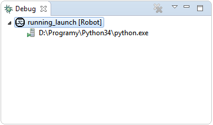

Controlling execution
In both RUN and DEBUG modes no matter if locally or remotely launched tests it is possible to
control basic aspects of execution: suspend/resume, terminate, terminate
gracefully and disconnect from running tests:
- once the tests are running switch to
Debug perspective,
- select currently running launch in Debug view as depicted below,

- execution controlling buttons will be activated in main toolbar.

From left to right buttons are used to:
- resume - only possible when currently paused; it orders TestRunnerAgent
to continue the execution,
- suspend - only possible when currently running; it orders the agent to suspend execution in nearest
possible point,
- terminate - it orders the agent to terminate. This behavior may be a little bit different in locally
launched tests than in remote executions because RED has a handle to running process in local launches so it will be
instantly killed however in remote execution it only asks agent to terminate, but it may not be done if
for example the tests execution hanged inside some keyword.
- disconnect - it orders the agent to disconnect. Once agent disconnected it will not send any new
events from tests execution to RED which means that nothing new will be shown in Execution or
Message Log views. When done in debug mode no breakpoints can be hit after that. The tests execution
should however run till the end which means that Console view in local launches will still present
the output of the process (both
stdout and stderr of that process).
All the buttons described above are available in Console view with one additional button:
- terminate gracefully - under Windows it simulates pressing
Ctrl+C and under Unix-like
systems it sends INT signal to the process. As described in
User Guide this allows Robot to stop tests execution execute all the teardowns and generate
output files.
In DEBUG mode there are more aspects of execution which can be controlled (pausing on breakpoints,
stepping, changing variables values etc.). For more information proceed to Debug topic.